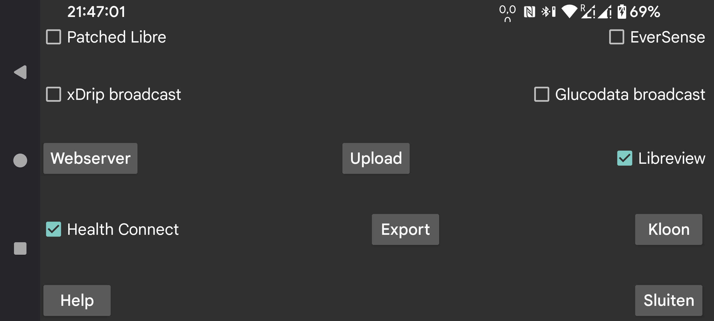

Stuur minutieuze glucosewaarden naar Health Connect . Je kunt andere apps toegang geven tot deze glucosewaarden, bijvoorbeeld Google Fit . Andere apps kunnen weer gegevens van Google Fit krijgen.
Geeft aan of stream Freestyle Libre 2 glucose waarden naar Libreview verzonden worden. Voor Freestyle Libre 3 sensoren kun je je Account Id nummer van Libreview laten halen. Druk er op om de instellingen te wijzigen.
De Patched Libre-broadcast werd in het verleden gebruikt om glucosewaarden naar xDrip te sturen.
Nog een glucose broadcast. Hiermee kan elke minuut een glucosewaarde naar xDrip worden verzonden. xDrip negeert ze bijna allemaal vanwege het vasthouden aan één waarde in 5 minuten. Je kunt deze beperking verwijderen door de broncode van xDrip te bewerken. Wijzig 4 * 60 * 1000 in 55 * 1000 in app/src/main/java/com/eveningoutpost/dexdrip/models/BgReading.java , zodat het wordt:
public static BgReading readingNearTimeStamp(long startTime)
{
long
margin = (55 * 1000);
return
readingNearTimeStamp(startTime, margin);
}
Het voordeel ten opzichte van de Patched Libre broadcast is dat xDrip de glucosewaarden niet op een onnavolgbare wijze transformeert.
Stuur dezelfde broadcast als ingeschakeld in xDrip met "Settings->Inter-app-settings->Broadcast locally". Apps zoals AndroidAPS luisteren ernaar. In tegenstelling tot de originele xDrip Broadcast die elke 5 minuten werd uitgezonden, zendt Juggluco deze broadcast elke minuut uit.
Juggluco heeft een eigen glucose broadcast, glucodata.Minute. See https://www.juggluco.nl/Juggluco/glucosebroadcast.html voor meer informatie.
Vink de apps aan die deze broadcast moeten ontvangen.
Webserver die kan worden gebruikt met xDrip-horloges en sommige Nightscout-apps. Voorheen xDrip webserver genoemd.
Uploaden naar Nightscout-server.
Stuur alle data via een internetverbinding naar een andere instantie van Juggluco en maak zo een kloon van Juggluco op een ander apparaat. Bestaande data wordt overschreven.
Gegevens opslaan in een bestand.